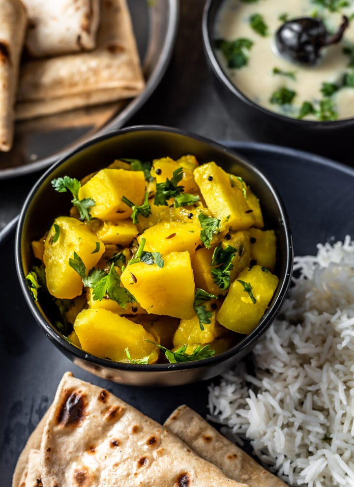

Aloo Sabzi Recipe
INGREDIENTS
- Potatoes-4
- large peeled and cubed
Onion-1
- large sliced
Garlic-6
- fat cloves chopped
Curry leaves
- a handful
Oil-4 to 5 tbsp
- Red Chilli Powder-1 tbsp
- Fennel Seed Powder / Saunf or Sombu Podi-2 tbsp
- Turmeric Powder / Manjal Podi-1 tbsp
- Salt to taste
INSTRUCTIONS
-
Take cubed potatoes in a sauce pan, add in salt and cover with water.
- Cook this till the potatoes are tender.
- Drain it in a bowl.
Now add in fennel seed powder, salt, chilli and turmeric powder and toss well.
- Heat oil in a pan, add in garlic and curry leaves.
- Saute them for a min.
-
Add in the onions and saute for 5 mins or so
- Add in the potatoes and toss well in the oil
.
-
Cook this on medium high heat till the potatoes are well roasted.
- It will take around 10 mins.
- Keep mixing inbetween.
- Turn off the heat and serve with rice.
